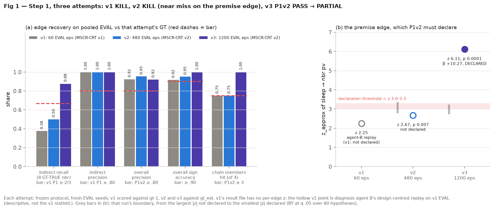
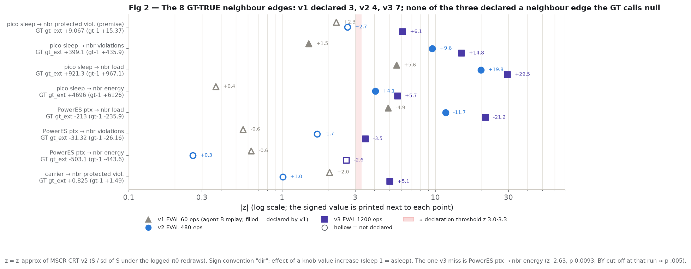
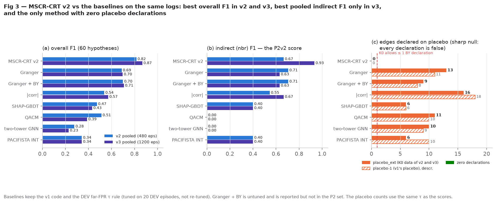
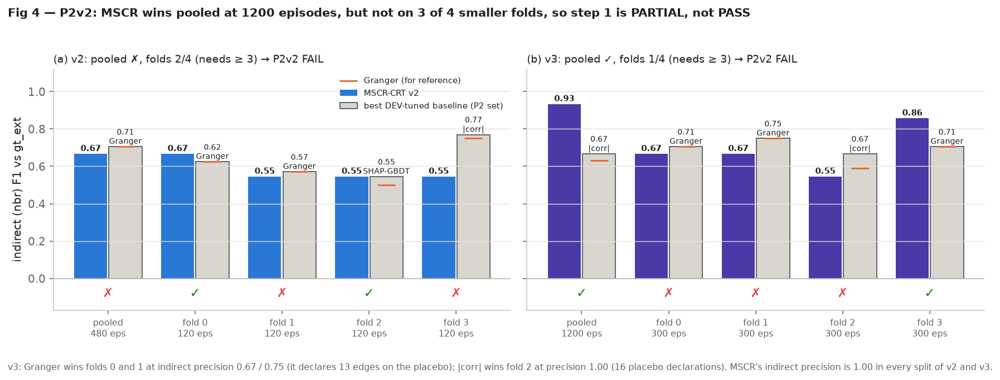
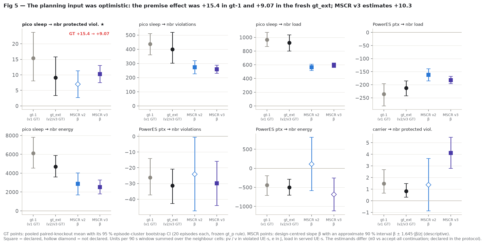
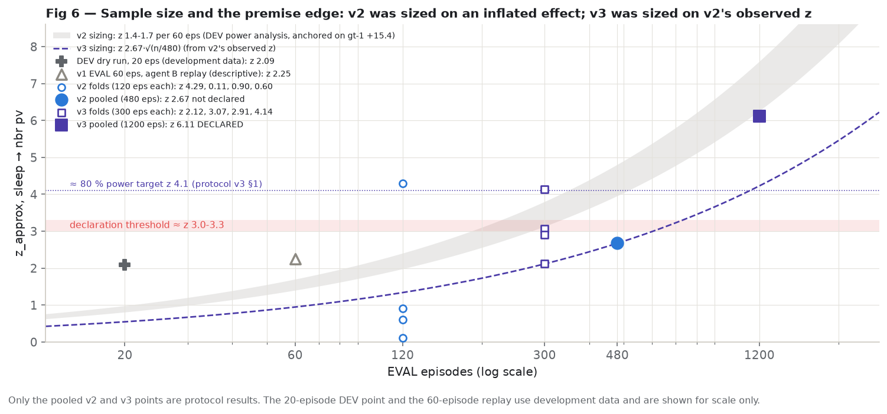
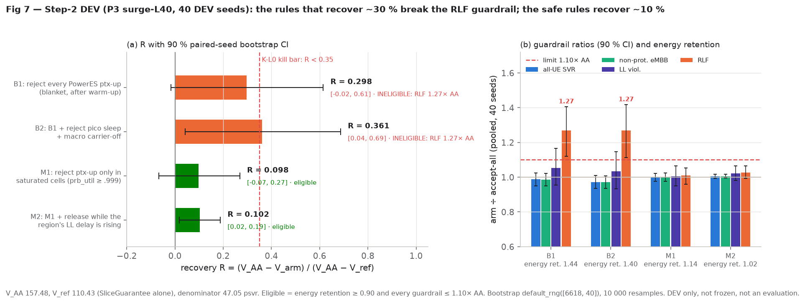

Step 1 (discovery): PARTIAL, on the third attempt. v1 (60 episodes) was KILL and v2 (480 fresh episodes, amended method) was KILL by a near miss. v3 (1 200 fresh episodes, same method as v2) passes the primary criterion P1v2: MSCR-CRT v2 declares the whole chain with the right signs, including the premise edge pico sleep → neighbour protected violations (β +10.27 vs fresh GT +9.07, z 6.11). It recovers 7 of 8 GT-TRUE neighbour edges at indirect precision 1.00, overall precision 0.92 and sign accuracy 1.00, and declares nothing on the sharp-null placebo, where every baseline declares 6-16 edges. It fails the head-to-head P2v2: it wins pooled (indirect F1 0.93 vs 0.67) but only 1 of 4 folds of 300 episodes (it needs 3).
Step 2 (referee): negative at DEV, not evaluated. The K-L0 check predicted R 0.033 (bar 0.35). Three debate agents agreed that the winning moves on this scenario are static envelopes that need no causal map. A 40-seed DEV run confirmed it: blanket "reject PowerES ptx-up" recovers R 0.30-0.36 but breaks the RLF guardrail (1.27× accept-all), and the eligible map-informed gates recover R ≈ 0.10. The ~110 CPU-h evaluation was not launched. Where the referee should be tested is the user's decision.
Our long-term aim is a "referee" for the apps (xApps) that tune an O-RAN radio network. When energy-saving apps and an app that protects priority users get in each other's way, the referee should decide who wins, and it should do so from a learned map of cause and effect. Step 1 asks whether our method can learn that map from logs in which the referee's accept/reject choices were randomised. Step 2 asks whether a referee that uses the map beats simpler ones.
Step 1 needed three tries. Each try had its rulebook frozen before we looked at new data, and each used brand-new simulated episodes. The first try (60 episodes) found only 3 of the 8 true neighbour effects and had one sign backwards. Four independent reviews found the main reason: far too little data, plus a real bug in how the direction of an effect was read. The second try fixed the bug and used 480 episodes. It missed by a hair on the single most important link, "a small cell going to sleep raises protected-user problems in the neighbouring cells". The third try changed only the amount of data (1 200 episodes). It found that link clearly, and 7 of the 8 true neighbour effects, with no wrong claims about neighbours. On fake data where nothing can have an effect, it claimed nothing; every competing method claimed between 6 and 16 effects there. Pooled over all 1 200 episodes it beats every other method, but on quarter-size slices it wins only one of four, and the rulebook asked for three. So the verdict is "partial". Because it took three tries, any write-up has to show all three.
For step 2 the answer on this scenario is "probably not". The moves that help here are blunt fixed rules, mainly "stop the power-saving app from turning transmit power back up". They need no cause-and-effect map, and the version that helps most breaks a safety limit (27 % more dropped radio links). The safe versions recover about a tenth of the harm. We therefore did not spend the roughly 110 CPU-hours a full step-2 test would cost. The open question for the user is where to test the referee next.
Main goal (NEXT_PLAN.md, agreed 2026-09-29): causal learning for O-RAN WG3 xApp
conflict mitigation. A WG3 arbiter that acts on a discovered cause-effect map should beat QACM, PACIFISTA, xTRUCE and
SHAP→DAG on protected-slice SLA at matched energy (retention ≥ 0.90) with every guardrail ≤ 1.10 × accept-all. The
test world is E6-P P3 surge-L40, the one cell where the guardrail-safe oracle had a real average edge
(R_or 1.352, NOISE STOP; previous report).

| item | v1 (E6P_DISCOVERY_PROTOCOL.md, sha256 f9d87740…, commit 9164518 09-29 20:44 NST) |
|---|---|
| episodes | 720 s (120 s all-accept warm-up + 600 s scored); UnitArbiter, T = 60 s units, open_rule="feasible"; π0 = accept .5 / half .2 / reject .3 for ES, PowerES, SliceGuarantee (draws tag 6612) |
| seeds (block 180000-183999) | DEV 183300-319 (20), EVAL 183320-379 (60; folds of 20), GT 183380-399 (20), PLACEBO 183400-419 (20; modes logged, accept applied = sharp null), PROF 183420-443 (24) |
| edge space | 60 hypotheses = 4 knob families {carrier, sleep, ptx, prot_min} × 3 relations {own, nbr = N(c) − c, far} × 5 KPIs {pv protected violated UE-s, v all violated UE-s, e energy J, rlf, load served UE-s}. "dir" orientation: an edge is the effect of a knob-value increase (sleep 1 = asleep); unit treatment x = level × sgn, level accept 1 / half 0.5 / reject 0 |
| unit table | one row per opened unit; y(rel, k) = KPI summed over the relation's cells over the 90 s after t0 minus the 90 s before; conditioners = obs-only context + all 15 pre-window values; GT fields never read (a test poisons them) |
| method | MSCR-CRT v1 (crt_units.py): redraw one family's modes from the logged π0 tables, other families and outcomes fixed; statistic = the frozen MSCR S*; B = 9 999; BY at q .05 over the tested hypotheses; sign = within-episode slope of y on x |
| baselines | SHAP-GBDT (Sharma 2025), |corr|, Granger F-test (+ untuned Granger-BY), two-tower GNN, PACIFISTA INT, QACM predictor, MSCR row-permutation, PACIFISTA native (xApp-level only); one τ rule for all: τ = 2nd-largest DEV far-relation score (≤ 1 DEV far declaration) |
GT (gt_p.py) | CRN paired knockout, accept vs reject, reseeds k = 1-3, H = 90 s, every other unit accepted. TRUE if the 95 % episode-cluster CI (B 4 000, tag 6617) excludes 0 and |mean| ≥ δ_k; NULL if the CI lies within ±δ_k; else INDET (excluded from scoring) |
| criterion | rule | v1 value | result |
|---|---|---|---|
| K0 validity | P(Binom(60, .05) ≥ n_reject) ≥ .01 (INVALID at ≥ 8) and ≤ 1 BY declaration, on PLACEBO | 3 of 60 at p ≤ .05 (rate .050), 0 BY | PASS |
| K1 support | ≥ 60 sleep units and ≥ 15 logged rejects on EVAL | 228 sleep units, 62 rejects | PASS |
| G premise | GT sleep → nbr pv TRUE(+) | +15.37, 95 % CI [8.03, 23.66], 60 labels | PASS |
| P1 | indirect recall ≥ 2/3, indirect precision ≥ .80, overall F1 ≥ .60, sign accuracy ≥ .90, ≤ 1 far declaration | recall 3/8 = .375; precision 1.00; F1 .60; sign .92 (11/12); far 1 | FAIL |
| P2 | MSCR indirect F1 ≥ best DEV-tuned baseline, pooled and ≥ 2 of 3 folds | pooled .55 vs Granger .75; folds 0/3 | FAIL |
| verdict | INVALID > NO-CHAIN > UNDERPOWERED > PASS / PARTIAL / KILL | official run 2026-09-30 00:45 NST, local detached, 1 805 s | KILL |
MSCR-CRT v1 declared 13 of 60 on pooled EVAL (folds 8 / 10 / 9): carrier → own pv (−), v (−), e (+); sleep → own e (−), load (−); sleep → nbr v (+, p .0015), load (+); sleep → far v (+, p .0018); ptx → own v, e, load (+); ptx → nbr load (−); prot_min → own pv (+). Two of the 13 disagree with the GT: prot_min → own pv is TRUE with sign −1 (the sign bug, §3), and sleep → own e is GT-NULL (mean −190 J, inside δ). Receiving-cell localisation was 5 of 15 correct (0.33; the GT's own top-1 matched the candidate cell in 2 of 2). The lag-1 carry-over audit declared 0 of 120 (17.5 % at p ≤ .05, descriptive).
| method | split | ind P | ind R | ind F1 | ov P | ov F1 | sign | far decl. | # decl. |
|---|---|---|---|---|---|---|---|---|---|
| MSCR-CRT v1 | pooled | 1.00 | 0.38 | 0.55 | 0.92 | 0.60 | 0.92 | 1 | 13 |
| fold 0 / 1 / 2 | nan / 1.00 / 1.00 | 0.00 / 0.12 / 0.25 | 0.00 / 0.22 / 0.40 | 0.88 / 0.90 / 0.89 | 0.40 / 0.49 / 0.44 | 0.86 / 0.89 / 1.00 | 0 / 0 / 0 | 8 / 10 / 9 | |
| SHAP-GBDT | pooled | 1.00 | 0.25 | 0.40 | 0.90 | 0.49 | 1.00 | 0 | 11 |
| fold 0 / 1 / 2 | 1.00 / 1.00 / 1.00 | 0.38 / 0.50 / 0.50 | 0.55 / 0.67 / 0.67 | 0.92 / 0.93 / 0.93 | 0.60 / 0.63 / 0.63 | 1.00 / 1.00 / 1.00 | 1 / 1 / 1 | 14 / 15 / 15 | |
| |corr| | pooled | 1.00 | 0.50 | 0.67 | 0.88 | 0.65 | 0.93 | 1 | 17 |
| fold 0 / 1 / 2 | 1.00 / 1.00 / 1.00 | 0.50 / 0.50 / 0.50 | 0.67 / 0.67 / 0.67 | 0.88 / 0.89 / 0.84 | 0.65 / 0.74 / 0.70 | 1.00 / 0.94 / 0.88 | 1 / 4 / 5 | 18 / 21 / 21 | |
| Granger | pooled | 0.75 | 0.75 | 0.75 | 0.70 | 0.70 | 0.79 | 4 | 31 |
| fold 0 / 1 / 2 | 1.00 / 1.00 / 1.00 | 0.38 / 0.38 / 0.25 | 0.55 / 0.55 / 0.40 | 0.73 / 0.73 / 0.75 | 0.52 / 0.52 / 0.56 | 1.00 / 1.00 / 0.75 | 1 / 0 / 2 | 17 / 15 / 17 | |
| Granger-BY (not in P2) | pooled | 1.00 | 0.50 | 0.67 | 0.71 | 0.62 | 0.87 | 3 | 23 |
| fold 0 / 1 / 2 | 1.00 / 1.00 / 1.00 | 0.25 / 0.25 / 0.25 | 0.40 / 0.40 / 0.40 | 0.71 / 0.75 / 0.69 | 0.49 / 0.46 / 0.45 | 1.00 / 1.00 / 0.89 | 1 / 0 / 1 | 14 / 12 / 13 | |
| two-tower GNN | pooled | nan | 0.00 | 0.00 | 0.62 | 0.29 | 1.00 | 3 | 10 |
| fold 0 / 1 / 2 | nan / 1.00 / nan | 0.00 / 0.12 / 0.00 | 0.00 / 0.22 / 0.00 | 0.62 / 0.78 / 0.64 | 0.29 / 0.39 / 0.37 | 1.00 / 0.86 / 0.86 | 3 / 4 / 3 | 10 / 10 / 14 | |
| PACIFISTA INT | pooled | 1.00 | 0.25 | 0.40 | 0.89 | 0.44 | 1.00 | 0 | 9 |
| fold 0 / 1 / 2 | 1.00 / 1.00 / 1.00 | 0.12 / 0.38 / 0.38 | 0.22 / 0.55 / 0.55 | 0.90 / 0.92 / 0.92 | 0.49 / 0.56 / 0.56 | 0.89 / 1.00 / 1.00 | 2 / 1 / 1 | 11 / 14 / 14 | |
| QACM (own only) | pooled | nan | 0.00 | 0.00 | 0.90 | 0.49 | 1.00 | 0 | 11 |
| fold 0 / 1 / 2 | nan / nan / nan | 0.00 / 0.00 / 0.00 | 0.00 / 0.00 / 0.00 | 0.92 / 0.91 / 0.91 | 0.60 / 0.53 / 0.53 | 1.00 / 1.00 / 1.00 | 0 / 0 / 0 | 14 / 13 / 12 | |
| MSCR row-perm | pooled | 0.57 | 1.00 | 0.73 | – | 0.79 | 0.91 | 0 | 24 |
Recomputed from each method's declared list and the gt-1
cells, and asserted equal to step1_v1_full.json. Row-perm is scored over its 24 mapped hypotheses only
and is copied from STEP1_V1_RESULT.md (not recomputed). P2 best baseline per split: pooled Granger .75;
fold 0 |corr| .67; folds 1, 2 SHAP-GBDT .67.
Per the overnight authorisation, a KILL triggered independent diagnosis agents. Each worked read-only on DEV,
PLACEBO and GT (EVAL could be looked at, never tuned on). Their final messages were not saved as files; the numbers
below are from their summaries in .tmp/PLAN.md. Their scripts and outputs are in
.tmp/diag/{A,B,C,D}/, and where an output file exists it was checked.
| agent | finding | key numbers |
|---|---|---|
| C (mechanisms) | Power ceiling. A noise-free (oracle) unit-level test at 60 episodes reaches z > 3 on exactly three of the eight TRUE neighbour edges, the three MSCR found. | oracle z at 60 eps: sleep → nbr load 10.8, ptx → nbr load 7.3, sleep → nbr v 3.8, sleep → nbr e 2.6, sleep → nbr pv 1.2, the rest < 0.6 → ceiling 3/8 |
| C | Sign bug (Simpson). The v1 sign is the slope on x = level × sgn, but the request direction sgn is not randomised and predicts the KPI trend. Pooling raise and release requests reverses the sign. | prot_min → own pv on EVAL (re-run for this report, .tmp/diag/C/sign_check.py): pooled slope +1.13; within direction: raise −10.06 (n 3 364), release +0.10 (n 1 875), i.e. dir-sign −10.06 and −0.10, both negative like the GT. DEV: +1.39 vs −9.03 / +0.18. |
| C | Half is mis-dosed; reject is a delay; far is not null; the estimand mismatch is not the cause. | half applied ~90-100 % (protocol v2: 88-100 %), coded 0.5; a reject delays the change ~60 s (the xApp re-proposes); sleep → far is a real 2-hop effect; π0 accept-vs-reject contrasts on EVAL match the GT within ~1.4 SE |
| A (noise, design) | Better designs (fixed effects, conditioning, CUPED) do not rescue 60 episodes. | best design, expected z at 60 eps for sleep → nbr pv 1.67 (A/design_dev_a.json, fe+cond); recall ceiling ≈ 0.4; sleep → nbr pv needs ~330-650 eps; other units' modes explain ~0 of the variance |
| B (statistic, multiplicity) | The statistic and BY explain at most one missed edge; sign bug confirmed; recommends the design-centred, residualised "adj" statistic, pre-registered in B/NOTES.md before any EVAL look. | between-sgn contrast = 63 % of the variance of x; on v1 EVAL (descriptive, B 1 999) "adj" gives sleep → nbr pv z 2.25, p .022 (B/eval_lite_B1999.json) |
| D (SNR, baselines) | Per-unit signal-to-noise is low; the baselines are not calibrated: with their DEV τ they declare many edges on the placebo, where no assignment has any effect. | per-unit SNR sleep → nbr pv 0.116 (paired GT label 0.588); ~1 179 units ≈ 250 eps for z 4 (D/snr.json); on placebo-1 |corr| declares 18, INT 10, Granger 11 (D/base_placebo.json): x = level × sgn leaks the non-randomised direction; the GBDT fallback is not SHAP |
A reported that other units' randomised modes explain about none of the outcome variance; D reported that about two thirds of it comes from other units' decisions. The disagreement was not resolved, and it did not change the action: both agree that more data, not more adjustment, is what raises z at this effect size. D also proposed a paired-knockout (digital-twin) instrument as a fallback, which was not needed.
cdd_oran/decision/crt_units_v2.py (version mscr-crt-units-v2, 12 tests, commit
3919ac6). Unchanged from v1: the unit table, the 60 hypotheses, the "dir" orientation, the logged-π0
conditional redraw of one family's modes with every other family held fixed, B = 9 999, BY at q .05, and the support
rule (≥ 30 units, ≥ 5 accepted, ≥ 5 rejected, ≥ 3 episodes).
| piece | v1 | v2 | why |
|---|---|---|---|
| dose | accept 1, half 0.5, reject 0 | accept = half = accept+rb = 1, reject = 0 | half converges to the requested value within the 60 s unit (slew / alternation rule; applied 88-100 %); the treatment is "applied vs rejected" (C) |
| regressor | x = level × sgn | v_u = sgn_u · (level(mode_u) − E_π0,u[level]), expectation over the unit's own logged π0 row | design-centred: E[v_u] = 0 under π0 for every unit, so the non-randomised direction sgn and anything it correlates with cannot enter the null mean (the Simpson sign bug; B, C) |
| outcome | y, with conditioners inside S* | r = OLS residual of y(rel, k) on episode × sgn fixed effects + the same target's pre-window value | removes between-episode and between-direction variance (B's "adj"); r uses outcomes and pre-assignment quantities only |
| statistic | frozen MSCR S* | S = Σ v_u r_u, T = |S|; p = (1 + #{T_b ≥ T_obs}) / (B + 1); RNG [seed, 6616, 2, family, lag, split] | linear score, cheap (480 eps pooled in 10 s); B's analysis: the statistic was not the binding constraint |
| effect, sign | within-episode slope of y on x | β = S / Σ v²; sign = sign(β); z_approx = S / sd(S under the draws) (descriptive) | a sign read from the randomised contrast only |
| sample | 60 EVAL eps | 480 (v2), 1 200 (v3) | the power ceiling (A, C, D) |
Under family f's sharp null (f's assigned modes have no effect on the trajectory), every outcome y is fixed, and so are the episode, the request direction sgn and the pre-window values: they are pre-assignment. The residual r is a function of those only, so it is fixed too and is computed once. The only random quantity is v, and the null distribution of S is generated by redrawing f's modes from exactly the logged π0 tables, with the other families' modes held fixed as in v1. So p is a finite-sample-valid CRT p-value; the residualisation can change power but not size. The placebo checks agree: K0 rate .033 and .067 (2 and 4 of 60 at p ≤ .05) with 0 BY declarations on the two placebo sets. The small tolerance 1e-9 (1 + Σ|r|) in the comparison makes p conservative against float round-off only.
Protocol v2 (E6P_DISCOVERY_PROTOCOL_V2.md, sha256 fea6488c…, commit 3919ac6 00:33 NST,
before any fresh record was opened). Fresh data: eval_v2 183460-519 + 183560-979 (480 eps, 4 folds of 120, 64 629
units), gt_ext 183520-539 (20 eps, 1 379 labels, 75 of them sleep), placebo_ext 183540-559 (20 eps). Criterion
P1v2 replaced P1: sleep → nbr pv declared (+), at least 3 of the 4 chain members declared with the correct sign,
overall precision ≥ .80, sign accuracy ≥ .90. Far is reported, not a criterion. P2v2 = P2 with ≥ 3 of 4 folds.
| criterion | value | result |
|---|---|---|
| K0 (placebo_ext) | 2 of 60 at p ≤ .05 (rate .033), 0 BY; placebo-1, descriptive: 4 (.067), 0 BY | PASS |
| K1 | 1 912 sleep units, 611 rejects | PASS |
| G (gt_ext) | sleep → nbr pv TRUE(+) +9.07, 95 % CI [3.34, 15.80]; GT 28 TRUE / 19 NULL / 13 INDET, same 8 neighbour TRUE edges and signs as gt-1 | PASS |
| P1v2 | premise edge not declared (p .007, BY cut-off p ≤ .0041 at rank 23); chain 3/4; overall precision .95 (20/21); sign .95 (19/20) | FAIL |
| P2v2 | pooled .67 vs Granger .71; folds 2/4 | FAIL |
| verdict | pass 1 (no baselines) 29 s; pass 2 (baselines) 1 502 s; both local | KILL (near miss) |
| chain member (expected sign) | GT gt_ext | declared | β | z_approx | p |
|---|---|---|---|---|---|
| sleep → nbr load (+) | TRUE +921.3 | yes, + | +562.1 | +19.81 | .0001 |
| sleep → nbr pv (+), premise | TRUE +9.07 | no | +6.97 | +2.67 | .0070 |
| sleep → nbr v (+) | TRUE +399.1 | yes, + | +272.3 | +9.56 | .0001 |
| ptx → nbr load (−) | TRUE −213.0 | yes, − | −162.3 | −11.66 | .0001 |
MSCR-CRT v2 declared 23 of 60 (folds 19 / 18 / 19 / 17), indirect recall 4/8 (sleep → nbr v, e, load; ptx → nbr load) at indirect precision 1.00, far 5. The one sign error is sleep → far v (declared −, GT +33.7). The one GT-NULL declaration is sleep → own e (mean −190 J, inside δ 329 J). Two declarations fall on INDET cells and are not scored (carrier → far pv, sleep → own v). The premise edge was declared in fold 0 alone (z 4.29; folds 1-3: 0.11, 0.90, 0.60).
| method (v2, pooled) | ind P | ind R | ind F1 | ov P | ov F1 | sign | far | # decl. | placebo_ext decl. | placebo-1 decl. |
|---|---|---|---|---|---|---|---|---|---|---|
| MSCR-CRT v2 | 1.00 | 0.50 | 0.67 | 0.95 | 0.82 | 0.95 | 5 | 23 | 0 | 0 |
| Granger | 0.67 | 0.75 | 0.71 | 0.64 | 0.69 | 0.71 | 7 | 36 | 13 | 11 |
| Granger-BY (not in P2) | 0.67 | 0.75 | 0.71 | 0.66 | 0.70 | 0.71 | 6 | 34 | 9 | 8 |
| |corr| | 1.00 | 0.38 | 0.55 | 0.85 | 0.54 | 1.00 | 0 | 15 | 16 | 18 |
| SHAP-GBDT | 1.00 | 0.25 | 0.40 | 0.90 | 0.47 | 1.00 | 0 | 10 | 6 | 6 |
| QACM (own only) | nan | 0.00 | 0.00 | 0.91 | 0.51 | 1.00 | 0 | 12 | 11 | 10 |
| two-tower GNN | nan | 0.00 | 0.00 | 0.62 | 0.28 | 1.00 | 3 | 9 | 10 | 9 |
| PACIFISTA INT | 1.00 | 0.25 | 0.40 | 0.86 | 0.34 | 1.00 | 0 | 7 | 6 | 10 |
"placebo decl." = hypotheses declared on data where the logged modes were never applied (sharp null), with the same DEV τ as the scores. For MSCR it is the number of BY declarations. Baselines keep the v1 code and DEV far-FPR τ, which the v2 protocol discloses as somewhat conservative for |corr|, INT and QACM because sleep → far is TRUE. P2v2 per split, MSCR vs best P2-set baseline: pooled .67 vs .71 (Granger) ✗; fold 0 .67 vs .63 (Granger) ✓; fold 1 .55 vs .57 (Granger) ✗; fold 2 .55 vs .55 (SHAP-GBDT, tie) ✓; fold 3 .55 vs .77 (|corr|) ✗.
Protocol v3 (E6P_DISCOVERY_PROTOCOL_V3.md, sha256 1107dc99…, commit 80ae4c3 03:18 NST;
the first eval_v3 header is 03:20 NST). It changes only the EVAL sample: eval_v3 = 182000-183199 (1 200 eps, 4 folds
of 300, 161 951 units), fresh and not pooled with v2. GT (gt_ext), placebo (placebo_ext), DEV, the method, the analyzer
and every criterion are those of v2. The size came from v2's observed z: n ≈ 480 × (4.1 / 2.67)² ≈ 1 130 → 1 200.
| criterion | value | result |
|---|---|---|
| K0 (placebo_ext, as v2) | rate .033, 0 BY | PASS |
| K1 | 4 727 sleep units, 1 405 rejects | PASS |
| G (gt_ext, as v2) | +9.07 [3.34, 15.80] | PASS |
| P1v2 | premise declared (+); chain 4/4; overall precision .92 (23/25); sign accuracy 1.00 (23/23) | PASS |
| P2v2 | pooled .93 vs |corr| .67 ✓; folds 1/4 (needs 3) | FAIL |
| verdict | pass 1 74 s; full run 3 424 s (baselines 3 348 s), peak RSS 2.9 GB, local | PARTIAL |
| chain member | GT gt_ext | declared | β | z_approx | p | declared in folds (z per fold) |
|---|---|---|---|---|---|---|
| sleep → nbr load (+) | +921.3 | yes, + | +593.1 | +29.53 | .0001 | 4/4 (15.4, 14.3, 14.8, 15.2) |
| sleep → nbr pv (+) | +9.07 | yes, + | +10.27 | +6.11 | .0001 | 2/4 (2.12, 3.07, 2.91, 4.14) |
| sleep → nbr v (+) | +399.1 | yes, + | +258.0 | +14.80 | .0001 | 4/4 |
| ptx → nbr load (−) | −213.0 | yes, − | −182.5 | −21.25 | .0001 | 4/4 |
28 of 60 declared (folds 20 / 21 / 20 / 23; BY cut-off p ≤ .0050 at rank 28). The eight GT-TRUE neighbour edges: seven declared, all with the GT sign (carrier → nbr pv +4.12, z 5.06; sleep → nbr e +2 534 J, z 5.66; ptx → nbr v −30.0, z −3.50; plus the chain). The miss is ptx → nbr e (β −687 J, z −2.63, p .0093). The two GT-NULL declarations are sleep → own e (as in v1 and v2; GT mean −190 J, inside δ) and carrier → far v (GT +6.4, inside δ 20). GT NULL means "within ±δ", not "no effect", so these are small effects below the materiality margin rather than clear false discoveries. Three declarations fall on INDET cells (carrier → nbr v, carrier → far pv, sleep → own v). Far declared: 6.

| method (v3) | pooled ind F1 | fold 0 | fold 1 | fold 2 | fold 3 | pooled ov P | pooled ov F1 | sign | # decl. | placebo decl. |
|---|---|---|---|---|---|---|---|---|---|---|
| MSCR-CRT v2 | 0.93 | 0.67 | 0.67 | 0.55 | 0.86 | 0.92 | 0.87 | 1.00 | 28 | 0 |
| Granger | 0.63 | 0.71 | 0.75 | 0.59 | 0.71 | 0.61 | 0.70 | 0.78 | 42 | 13 |
| Granger-BY (not in P2) | 0.63 | 0.75 | 0.67 | 0.62 | 0.71 | 0.62 | 0.71 | 0.78 | 41 | 9 |
| |corr| | 0.67 | 0.67 | 0.67 | 0.67 | 0.55 | 0.86 | 0.57 | 1.00 | 16 | 16 |
| SHAP-GBDT | 0.40 | 0.40 | 0.40 | 0.40 | 0.40 | 0.89 | 0.43 | 1.00 | 9 | 6 |
| QACM (own only) | 0.00 | 0.00 | 0.00 | 0.00 | 0.00 | 0.88 | 0.39 | 1.00 | 8 | 11 |
| two-tower GNN | 0.00 | 0.00 | 0.00 | 0.22 | 0.00 | 0.57 | 0.23 | 1.00 | 8 | 10 |
| PACIFISTA INT | 0.40 | 0.22 | 0.40 | 0.40 | 0.40 | 0.86 | 0.34 | 1.00 | 7 | 6 |
| P2v2: MSCR ≥ best P2-set baseline? | ✓ (vs |corr| .67) | ✗ (Granger .71) | ✗ (Granger .75) | ✗ (|corr| .67) | ✓ (Granger .71) | 1 of 4 folds; needs 3 → P2v2 FAIL | ||||
Placebo declarations use placebo_ext, the same data and τ as in v2, so the column is identical to v2's. MSCR's indirect precision is 1.00 in every split of v2 and v3; Granger's v3 per-fold indirect precision is 0.67 / 0.75 / 0.56 / 0.67.


Per the protocol, a PARTIAL means step 2 may use the MSCR v2 map, and step 3 must include the SHAP-map arm.
| attempt | protocol (LF sha256) and freeze commit (NST) | fresh data (first record header, NST) | what changed | verdict (result commit) |
|---|---|---|---|---|
| v1 | E6P_DISCOVERY_PROTOCOL.md f9d87740…, 9164518 09-29 20:44 | eval-1 and gt-1 launched 20:46 from 9164518; dev-1, placebo-1 at 19:58 from 3e5ce78 (allowed before the freeze) | – | KILL (3919ac6) |
| v2 | _V2.md fea6488c…, 3919ac6 09-30 00:33 | gtx-3 00:25, ev2-2 00:27, plx-c2 00:31 (launched from b7d5326; records downloaded but not parsed before the freeze, as the protocol allows) | method (§4) and n = 480 | KILL, near miss (f6da578 03:17; baselines e1fc7e5 03:52) |
| v3 | _V3.md 1107dc99…, 80ae4c3 09-30 03:18 | ev3-1 03:20 from 6831be3 (simulated after the freeze) | n = 1 200 only | PARTIAL (311dd58 05:00; final c193996 05:57) |
sha256 over the LF-normalised file, recomputed by
make_figs.py and checked against each commit. The protocol texts state freeze times of "01:25 NST" (v2) and
"03:40 NST" (v3); the commit timestamps are 00:33 and 03:18. This report uses the commit and record-header times; the
order (freeze before fresh data was opened or simulated) holds on those.
80ae4c3; the JSON does not record it.v2's sample size came from a DEV power analysis anchored on the gt-1 effect of the premise edge, +15.37 (95 % CI 8.03-23.66), which projects z ≈ 1.4-1.7 per 60 episodes and z ≈ 4-4.8 at 480. The fresh GT (gt_ext) puts the same effect at +9.07 (CI 3.34-15.80). Scaling the plan's z by 9.07 / 15.37 gives about z 2.3-2.8 at 480 episodes, and v2 observed 2.67. v3 was sized from v2's observed z instead. Strictly, this was not a selection effect: the premise edge was fixed a priori, not picked because it looked large. It is ordinary sampling noise in a 20-episode GT (the two CIs overlap widely) that was then treated as a known effect size. Across the eight neighbour edges the GT moved both ways (sleep → nbr e 6 126 → 4 696; ptx → nbr e −444 → −503).


The step-2 plan (STEP2_REFEREE_PLAN.md, Plan agent, 01:10 NST, never frozen) is a regime referee: an
honest depth-2 tree per family on context features chosen by the map, an effect table from paired knockouts plus π0
contrasts, and a knapsack over accept / soften / defer of energy-saving requests under an energy budget β and
guardrails. The full evaluation was costed at ~110 CPU-h (seeds 184000-185999, registered in a1384a3).
Its cheapest kill test, K-L0 (dev data only), ran first.
| quantity | value (step2_kl0.json) |
|---|---|
| energy-saving units left after the 120 s warm-up, per episode (π0 dev + eval, 80 eps) | carrier-off 2.59, ptx-down 2.66, pico sleep 0.40 (vs carrier-on 21.46, ptx-up 20.74, prot_min +1 63.9 / −1 37.2, wake 3.73) |
| R_pred of the referee at β = .03 / .05 / .07 / .09 | 0.033 at every β, identical to the best global envelope (margin 0): it defers only carrier-offs; with no budget and no lower-bound rule, R_pred 0.154 |
| split-half sign agreement of the leaves | pv 0.50 (4 comparisons), all KPIs 0.50 (16); trees collapsed to one leaf per family |
| kill conditions (R_pred < .35; margin < .10; agreement < .9) | all three true → KILL |
| caveat noted at the time | the O_tape oracle also acts only after warm-up and reached R 1.35, so the K-L0 action space (energy-saving ES / PowerES only) looked too narrow → debate |
Three agents, read-only, small local simulations allowed (.tmp/step2debate/{F,G,H}/). Summaries from
.tmp/PLAN.md. Local Windows simulations are not poolable with Kaggle records and are development evidence
only.
| agent | findings |
|---|---|
| F (oracle forensics; local oracle re-runs of seeds 155030 / 155033) | O_tape's main lever is rejecting / locking PowerES ptx-up (power restores): ~149 / 156 per episode, non-accept in 75-83 % of region-epochs, so effectively static; plus SG damping and rollbacks. Its energy retention of 1.26 comes from the blocked restores. Ablations are strongly non-additive; seed 155030's oracle gain vanishes under any static rule and is chaos-sensitive (Linux 1 006 vs local 763). The loss Λ: 32 % arises before the surge in warm-up carrier-off macros (dwell-locked); the rest where SG is saturated. Blanket static gates on 8 local DEV seeds: ptx-up + sleep + carrier-off reject R 0.30 (CI 0.01-0.55), retention 1.37, guards pass; carrier-on and wake gates are disastrous. |
| G (map-referee advocate) | Could not support the position. Paired effects of rejecting a request type: carrier-on +7.9 pv (21.5 per episode), wake +13.3, prot_min+ +4.6, prot_min− null, ptx-up +0.2 overall but −0.9 to −2.8 in saturated cells (7.3 per episode, saves 5.9 kJ). An ES rollback is a no-op (120 s dwell > 60 s window). On 6 local DEV seeds, "reject ptx-up in saturated cells" R +0.225 [−0.27, 0.76], retention 1.20, LL guard 1.199 (fail); adding carrier-off / sleep rejects 0.228 (LL 1.14, fail). Conclusion: the only lever is a hand rule that needs no map ("PowerES must not raise ptx in saturated cells"). |
| H (skeptic) | O_tape's redrawn / true advantage ratio 0.472 implies a non-clairvoyant value of about R 0.64 (0.49-0.75) in P3/3 (0.14 in P3/1), but O_tape is a digital-twin MPC, not a referee. The hindsight static's 0.757 is mostly tape-fitted. Per-unit gating ceiling ≈ R 0.06. The only learnable per-unit signal is own protected active UEs for carrier-on (R² 0.15; H/hetero.json 0.151), and it never flips a decision, so a map / no-map / SHAP-map ablation would be void. Untested strong static rule: "reject ptx-up" (pv −0.2 ± 22 per unit, 4.6 kJ each). |
| synthesis | On P3 surge-L40 the winning policy is essentially a static envelope ("reject PowerES restores"). A map-driven referee is unlikely to beat it, and the map would not be the reason; the step-3 ablation would be void. The ~110 CPU-h evaluation was not launched; the cheap DEV check below was run instead. |
Driver scratchpad/e6_dev/e6p_step2_dev.py (a1384a3, run e6p-s2dev-1, 5
kernels, first header 05:10 NST). Paired by seed. R uses the Gate A v2 definition on these seeds: V_AA 157.48, V_ref
110.43 (SliceGuarantee alone), denominator 47.05 psvr. The four rule arms read only obs. Not frozen; DEV
only.
| arm | V | R [90 % CI] | R − R(B1) [90 % CI] | energy ret. | SVR ÷ AA | non-prot. eMBB | LL | RLF | eligible | rejects per episode |
|---|---|---|---|---|---|---|---|---|---|---|
| accept-all (AA) | 157.48 | 0 | −0.30 [−0.61, 0.02] | 1.006 | 1 | 1 | 1 | 1 | yes | – |
| SliceGuarantee alone (= V_ref) | 110.43 | 1 | – | −0.001 | 0.59 | 0.58 | 0.56 | 0.77 | no E | – |
| B1 reject every PowerES ptx-up after warm-up | 143.48 | 0.298 [−0.016, 0.615] | 0 | 1.441 | 0.99 | 0.99 | 1.05 | 1.27 | no G | ptx-up 192.1 |
| B2 B1 + reject pico sleep + macro carrier-off | 140.50 | 0.361 [0.043, 0.687] | +0.063 [0.031, 0.107] | 1.402 | 0.97 | 0.97 | 1.03 | 1.27 | no G | ptx-up 186.0, carrier-off 16.7, sleep 2.0 |
| M1 reject ptx-up only where own prb_util ≥ .999 | 152.86 | 0.098 [−0.068, 0.269] | −0.199 [−0.49, 0.09] | 1.138 | 1.00 | 1.00 | 1.01 | 1.01 | yes | ptx-up 59.6 |
| M2 M1 + release while region LL delay rises | 152.66 | 0.102 [0.017, 0.188] | −0.195 [−0.51, 0.12] | 1.024 | 1.01 | 1.01 | 1.02 | 1.03 | yes | ptx-up 7.4 (16.6 saturated, 9.2 released) |
Recomputed from the 400 raw job records with the
driver's paired-seed bootstrap (10 000 resamples, default_rng([6618, 40]), V_ref re-minimised per
resample) and asserted equal to step2_dev_summary.json. Rejects are request-level counts (a rejected
request is re-proposed each second), not 60 s units. With the Gate A v2 denominator 45.82 (other seeds) the R values
would be 0.306 / 0.371 / 0.101 / 0.105 (STEP2_DEV_RESULT.md). M1 is G's "GP" rule; M2's LL guard was
defined by the driver's builder, because G described but never implemented one.

None of them changed which records were pooled or how they were scored. Times NST (UTC + 05:45).
d819c5a added one-shot Colab jobs with keep-alive ticks.job-disc-full-1 launched 23:33 on a Colab TPU VM
(4 threads). It was alive at the 23:43 tick (RSS 536 MB, 22.9 min uptime), and the session was gone at 23:53 before
the exit code was pulled (runs/job-disc-full-1/tick.log). A second session, job-disc-full-2,
could not be created: the Colab API refused the request ("Service Unavailable" per PLAN; the launch log shows a
failed request). The official v1 analysis was re-run locally as a detached process (3 threads, RSS ~0.5 GB): 1 805 s, verdict 00:45. The colab_run.py print crash on non-cp1252 text was fixed in
d453caf.kaggle_run / colab_run given a
repo-relative SCRIPT path built a bundle that skipped the discovery protocol files and wrote a wrong
e6dev/ run path; the first launch's kernels all failed, and gtx-1 / gtx-2, ev2-1 and plx-c1
produced no records (plx-c1 was also auto-resumed once by the tick before being abandoned). The fix commit says
"all five 00:30 kernels failed on it", although the commit itself is timestamped 00:22; the clock label in the
message is off. Fixed in cloud.py (use the basename; b7d5326 00:22). Rule since: pass bare script names. Relaunched
as gtx-3, ev2-2 (Kaggle) and plx-c2 (Colab).e6_dirty = true. The only cause was
the then-untracked crt_units_v2.py, which the collection code never imports (protocol v2 §3).log2 ufunc layer
differs), so pooling is allowed; local Windows records were never used for EVAL, GT or PLACEBO.run (scratchpad/e6_dev/runs/) | what | episodes | CPU-h | first header (UTC) | git | platform |
|---|---|---|---|---|---|---|
e6p-disc-dev-1 | DEV | 20 | 0.43 | 09-29 14:13:15 | 3e5ce78 | Kaggle |
e6p-disc-placebo-1 | v1 placebo | 20 | 0.40 | 09-29 14:13:36 | 3e5ce78 | Kaggle |
e6p-disc-eval-1 | v1 EVAL | 60 | 1.27 | 09-29 15:01:40 | 9164518 | Kaggle |
e6p-disc-gt-1 | gt-1 knockouts | 20 | 19.96 | 09-29 15:01:00 | 9164518 | Kaggle |
e6p-disc-gtx-3 | gt_ext knockouts | 20 | 21.66 | 09-29 18:40:19 | b7d5326 (dirty) | Kaggle |
e6p-disc-ev2-2 | eval_v2 | 480 | 9.83 | 09-29 18:42:22 | b7d5326 (dirty) | Kaggle |
e6p-disc-plx-c2 | placebo_ext | 20 | 0.16 | 09-29 18:46:12 | b7d5326 (dirty) | Colab |
e6p-disc-ev3-1 | eval_v3 | 1 200 | 23.58 | 09-29 21:35:24 | 6831be3 | Kaggle |
e6p-s2dev-1 | step-2 DEV arms | 400 jobs | 7.44 | 09-29 23:25:02 | a1384a3 | Kaggle |
CPU-h = sum of per-episode (per-job) process CPU from the
raw records; for the GT runs it is dominated by the knockout labels (~1 h per episode). Kaggle = Linux 6.12.90, glibc
2.35, numpy 2.4.2. The discovery raw files are git-ignored (5035df9; Kaggle outputs keep a copy); the
step-2 raw file is committed.
feat/v2 since the last pushed commit d819c5a
(the brief says "about 15"). Nothing is pushed until the user says so. This report is not committed.Figures and every number in this report (local, about 30 s, reads result JSONs, the raw step-2 records and, if present, the raw discovery headers):
.venv/Scripts/python.exe reports/2026-09-30-step1-discovery-and-step2-dev/make_figs.pyIt asserts, for v1, v2 and v3, that its own re-implementation of the scores, P1 / P1v2, P2 / P2v2 and the BY
cut-offs reproduces the analyzers' JSONs. It checks that the protocol hashes match, that pass-1 and full-run CRT
outputs agree (status and p exactly; β and z to within 5e-11), and that the step-2 bootstrap reproduces
step2_dev_summary.json.
Analyses (local; R=scratchpad/e6_dev/runs):
# v1 (frozen protocol v1), official run
python scratchpad/e6_dev/e6p_disc_analyze.py analyze --dev $R/e6p-disc-dev-1/all.jsonl --eval $R/e6p-disc-eval-1/all.jsonl \
--gt $R/e6p-disc-gt-1/all.jsonl --placebo $R/e6p-disc-placebo-1/all.jsonl --prof $R/e6p-disc-prof-1/all.jsonl --json OUT.json
# v2 (protocol v2): pass 1 with --no-baselines, pass 2 without it; placebo-1 as the descriptive second placebo
python scratchpad/e6_dev/e6p_disc_analyze_v2.py analyze --dev $R/e6p-disc-dev-1/all.jsonl --eval $R/e6p-disc-ev2-2/all.jsonl \
--gt $R/e6p-disc-gtx-3/all.jsonl --placebo $R/e6p-disc-plx-c2/all.jsonl --placebo-dev $R/e6p-disc-placebo-1/all.jsonl --json OUT.json
# v3 (protocol v3): as v2 with --eval $R/e6p-disc-ev3-1/all.jsonl and no --placebo-dev
# step-2 DEV summary
python scratchpad/e6_dev/e6p_step2_dev.py summary --in $R/e6p-s2dev-1/all.jsonl --json OUT.jsonThe analysis commands were not logged verbatim. They are reconstructed
from .tmp/PLAN.md, the job tick log and the episode counts recorded in each JSON (v2: placebo_dev 20; v3:
placebo_dev 0).
STEP1_V3_RESULT.md and the brief say Granger wins 3 of 4 folds
"at .71-.75". Granger does beat MSCR in folds 0-2, but its fold-2 F1 is 0.59 (Granger-BY 0.62), and the P2-set winner
in fold 2 is |corr| at 0.67. This report uses the per-split values in step1_v3_full.json.c193996 is 05:57. The b7d5326 message mentions "00:30 kernels"
but is timestamped 00:22. This report uses commit and record-header times.git log d819c5a..HEAD
lists 14.| commit | time (NST) | what |
|---|---|---|
d819c5a | 09-29 21:50 | last pushed: one-shot Colab analysis jobs with keep-alive ticks |
5035df9 | 09-29 23:33 | do not track large discovery raw episodes |
d453caf | 09-29 23:59 | gt_ext / placebo_ext stages (183520-559); colab_run cp1252 fix |
f654dac | 09-30 00:14 | eval_v2 stage (480 eps) |
b7d5326 | 00:22 | fix: cloud bundle with a repo-relative SCRIPT path |
3919ac6 | 00:33 | MSCR-CRT v2 + tests, analyzer v2, protocol v2 frozen (fea6488c); v1 result archived; step-2 plan |
f6da578 | 03:17 | v2 result (KILL, near miss), pass 1 |
80ae4c3 | 03:18 | protocol v3 frozen (1107dc99); eval_v3 stage; registry note |
6831be3 | 03:18 | step-2 K-L0 (referee_p.py, driver, tests, result KILL) |
e1fc7e5 | 03:52 | v2 baselines (P2v2 fail; baselines uncalibrated) |
311dd58 | 05:00 | v3 pass 1 (P1v2 PASS) |
a1384a3 | 05:08 | step-2 DEV driver + tests; seeds 184000-185999 registered |
10b8fbf | 05:48 | step-2 DEV result + raw records |
2ad71b8 | 05:49 | morning brief 3 |
c193996 | 05:57 | v3 final (PARTIAL) |
| file | content |
|---|---|
docs/benchmark/E6P_DISCOVERY_PROTOCOL.md, _V2.md, _V3.md | the three frozen protocols |
cdd_oran/decision/crt_units.py, crt_units_v2.py, gt_p.py, edge_score.py, baselines_disc.py, referee_p.py | MSCR-CRT v1 / v2, knockout GT, scoring, baselines, K-L0 referee |
scratchpad/e6_dev/e6p_discovery.py, e6p_disc_analyze.py, e6p_disc_analyze_v2.py, e6p_referee_kl0.py, e6p_step2_dev.py, cloud.py, colab_run.py | collection, analyzers, step-2 drivers, cloud runners |
scratchpad/e6_dev/decision/STEP1_V{1,2,3}_RESULT.md + step1_v1_full.json, step1_v1_gt_tables.json, step1_v2_{pass1,full}.json, step1_v3_{pass1,full}.json | step-1 results (identical to .tmp/disc_* outputs) |
scratchpad/e6_dev/decision/STEP2_REFEREE_PLAN.md, step2_kl0.json, STEP2_DEV_RESULT.md, step2_dev_summary.json; runs/e6p-s2dev-1/all.jsonl | step-2 plan, K-L0, DEV arms (raw records committed) |
scratchpad/e6_dev/decision/MORNING_BRIEF_3.md; .tmp/PLAN.md | plain summary; chronological log incl. agent summaries |
.tmp/diag/{A,B,C,D}/, .tmp/diag/CONTEXT.md, .tmp/diag/build/dry_dev_v2.* | diagnosis agents' scripts and outputs; v2 DEV dry run |
.tmp/step2debate/{F,G,H}/, .tmp/step2debate/CONTEXT.md | step-2 debate agents' scripts and outputs |
scratchpad/e6_dev/decision/{MORNING_BRIEF_3.md, STEP1_V1_RESULT.md, STEP1_V2_RESULT.md,
STEP1_V3_RESULT.md, step1_v1_full.json, step1_v1_gt_tables.json, step1_v2_pass1.json, step1_v2_full.json,
step1_v3_pass1.json, step1_v3_full.json, STEP2_REFEREE_PLAN.md, step2_kl0.json, STEP2_DEV_RESULT.md,
step2_dev_summary.json} · raw scratchpad/e6_dev/runs/e6p-s2dev-1/all.jsonl and the headers of
runs/e6p-disc-*/all.jsonl · runs/job-disc-full-{1,2}/ · docs/benchmark/E6P_DISCOVERY_PROTOCOL{,_V2,_V3}.md
· .tmp/PLAN.md (from "OVERNIGHT 2 AUTHORIZATION") · .tmp/diag/, .tmp/step2debate/
· git log d819c5a..HEAD. Figures and figures_data.json are regenerated live by
make_figs.py.